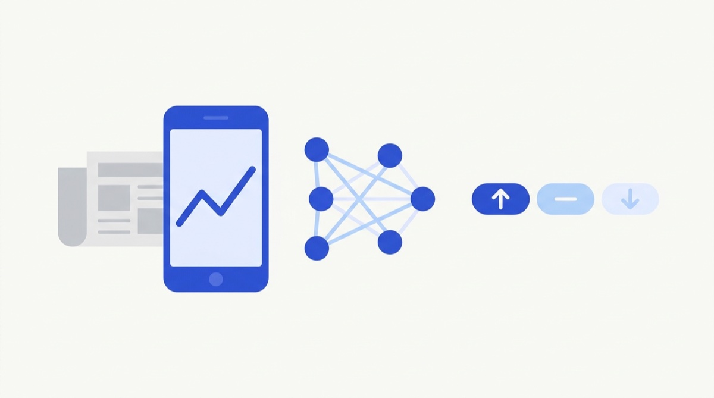

NLP PROJECT
FinTurkBERT
A Turkish language model adapted to financial text. It labels statements from news, company announcements and market commentary as positive, negative or neutral from an investor's point of view.
- Context
- NLP team project, ITU
- Model
- Hugging Face
- Code
- GitHub

Built with
The problem
General Turkish models miss the financial meaning of a sentence: falling costs are good news, falling revenue is not. There was also very little labeled Turkish financial data to learn from.
How it works
- Collect Turkish financial news from about twenty sources, then filter and deduplicate it.
- Continue pretraining BERTurk on this text so it learns the language of finance.
- Build a labeled sentiment dataset by translating and localizing English datasets with an LLM and adding curated Turkish news.
- Fine-tune with LoRA for three classes: negative, neutral and positive.
Dataset
| Source | Sentences |
|---|---|
| Financial PhraseBank, translated and localized | 4,846 |
| Curated Turkish financial news | 2,197 |
| FiQA, translated and localized | 771 |
| Total | 7,814 |
Results
| Metric | Test set |
|---|---|
| Accuracy | 84.40% |
| F1 score | 83.52 |